Why The Second World War Started?
Because of the unfair Treaty of Versailles thats was said for germany to pay for all the money used during the war disband most of its army disband its entire airforce and demilitarize the rhineland. And left the german people a curroupt and weak government
What was the things Invented during The Second World War?
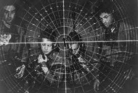
Synthetic Rubber, The Jeep, The Atomic Bomb/A-Bomb, and Duct Tape
Who Were The Leaders of The Second World War
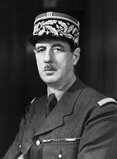
Charles De Gaulle-France-Lead France's Revolution Against Germany
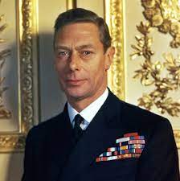
George VI- United Kingdom/Great Britain-King of The United Kingdom/Great Britain during WW2 and with Prime minester chamberlin that did the horrible tactic Appleasement to Nazi Germany but helped Prime minester churchill to victory in WW2
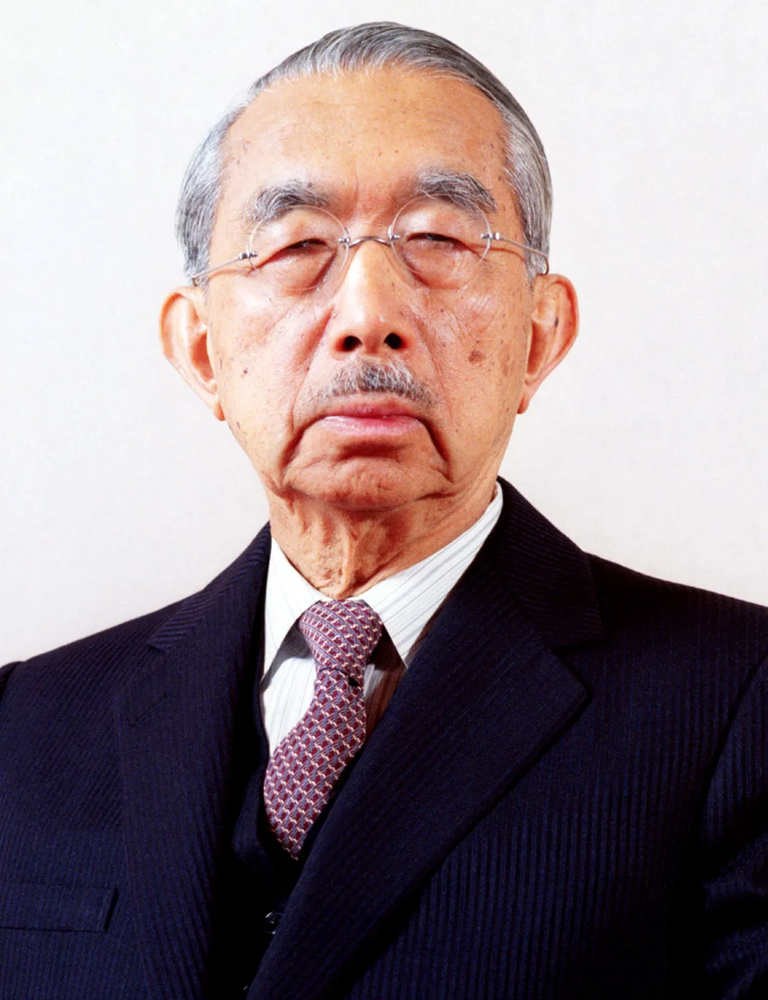
Hirohito- Empire of Japan-Emperor of Japan until the end of his life at 1989 he kept power after the war but was puppeted and forced to have a prime minester. He lead his nation and did the Attack on pearl Harbor and lead to the war crimes like the rape of nanking the former capital of the republic of china/Roc
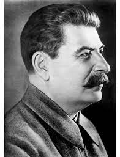
Stalin- Ussr-used gulag to scare his counties masses and was blinded by the pact with nazi germany until barbarosa and helped stop nazi germany during the war
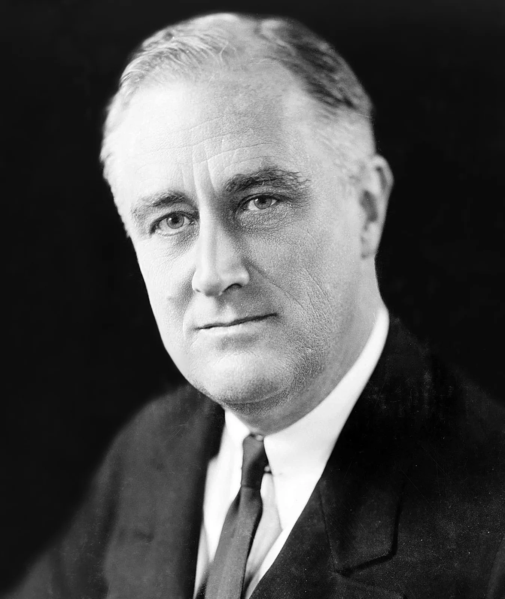
Franklin D. Roosevelt- United States-he tried to stay out of the war but he was forced to join and help stop the war. He made and said the "day of infamy" speech. the treaty to lay the foundations for another world war
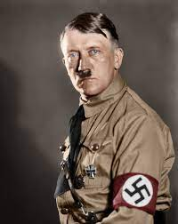
Adolf Hitler- Nazi Germany- helped italy and other Axis powers and used Blitzkrieg/Lightning Warfare and Wolfpack tactic a submare pacty hunting down allied supplies and he was more careful to get revenge but was stopped by the allies and he killed himself in his bunker at 1945
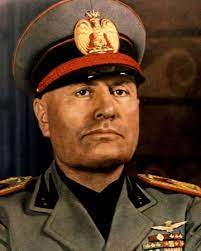
Benito Mussolini- Italy- was a key person for the lower front and the Balkans but was stopped by greek defence during the greek-italian war and allied troops arrived at greece to open a third front causing more problems for the allies and he was executed and overthrown by the pro ally government to replace him.
Types of Warfares During WW2
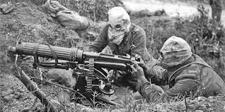
Chemical Warfare-Using Chemical Wepons to gain a advantage in the battle field like gassing them with gas grenades but was less effective because most troos had a gas mask on reach on all times.

Air Warfare-Using planes to bomb stratigic targets and could be destroyed by a.a./Anti Aircraft and fighter planes or any planes with a gun caliber to kill solders at the ground. This was used in all fronts. and the japanese also used them to fly straight into enemy ships on a suicide charge The Kamakazi's.
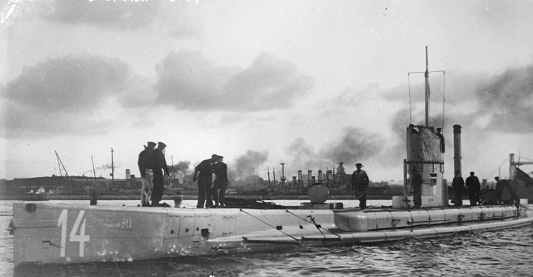
Submarine Warfare-Sinking enemy supplies by sinking their supply ships. Used in the Atlantic and Pacific.
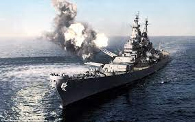
Naval Warfare-Sinking enemy ships to contol sea territory and has Destroyer, Cruiser, Battle-Cruiser, and Battleship catigories. but in the later half the new era began the carrier era "Aircraft Carriers"
Sides During WW2
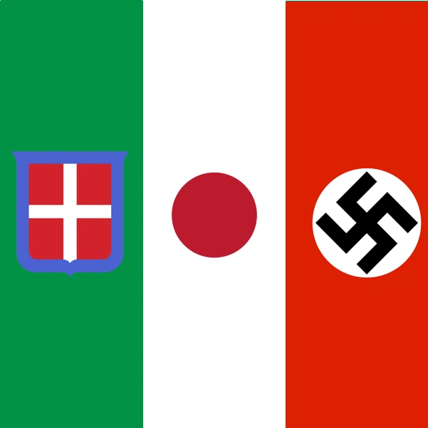
Axis-Nazi Germany, Finland, Romania, and Italy
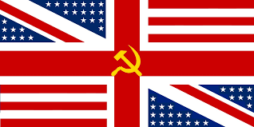
Allies-France, United Kingdom/Great Britain, Ussr/Soviet Union, and United States